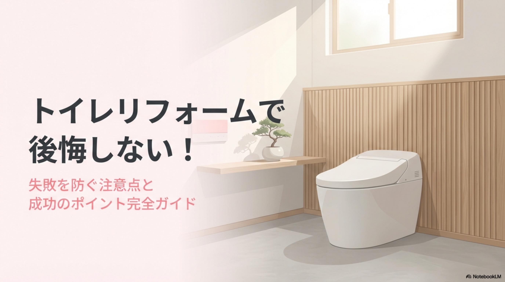
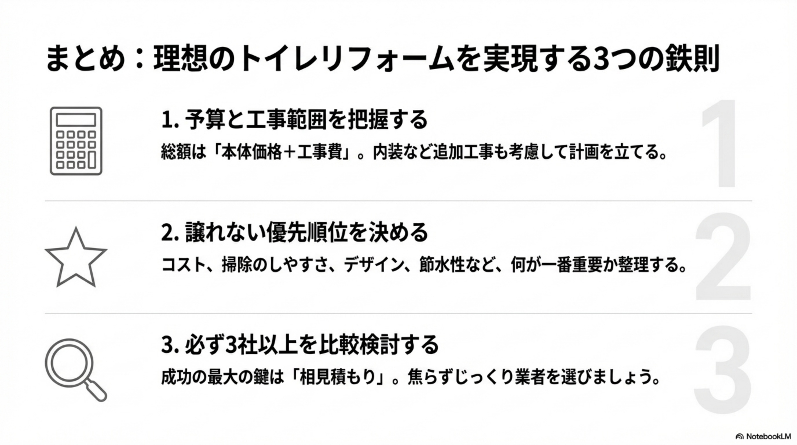
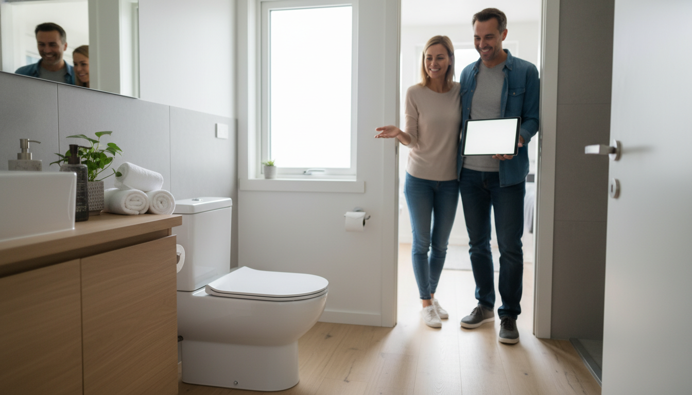
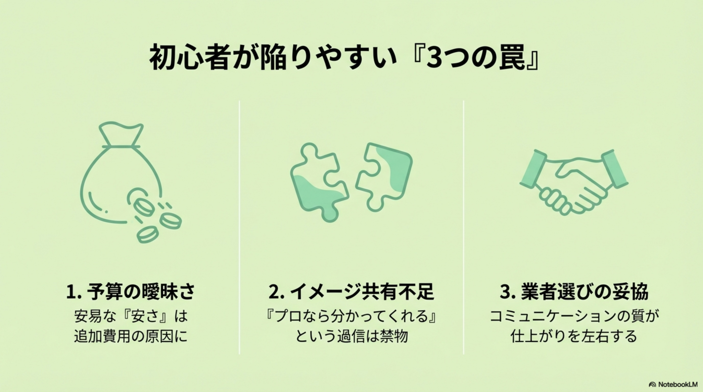

トイレのリフォームを検討する際、最も気になるのが「費用」ではないでしょうか。トイレリフォームの総額は、主に「新しいトイレの設備代（本体価格）」と「工事費（施工費・処分費など）」の合計で決まります。工事の内容によって金額は大きく変動するため、まずは全体的な相場観を掴むことが重要です。
トイレ本体の種類によって、製品価格と設置費用が変わります。主な3つのタイプについて、工事費込みの相場を見ていきましょう。
トイレ本体の交換と同時に、壁紙（クロス）や床材（クッションフロア）の張り替えを行う場合、追加で3万円〜6万円程度の費用がかかります。トイレを外したタイミングで床や壁を張り替えることで、継ぎ目のない綺麗な仕上がりになり、別々に依頼するよりも工賃がお得になるケースがほとんどです。
和式トイレから洋式トイレへリフォームする場合は、単なる交換工事とは異なり、床の段差解消や解体、新たな配管工事、電気配線工事などが必要です。
特に築年数の古い住宅では、給排水管の劣化状況によって追加工事が必要になることもあるため、事前の現地調査が不可欠です。

トイレリフォームを成功させるには、「どのメーカーの製品を選ぶか」と「どの業者に依頼するか」の掛け合わせが重要です。
国内シェアの高い3大メーカーの特徴と価格帯を整理しました。
| メーカー | 代表的な機能・特徴 | 本体価格帯（定価ベース） |
|---|---|---|
| TOTO | 「きれい除菌水」や汚れが付きにくい「セフィオンテクト」加工が強み。洗浄力と節水性のバランスが良い。 | 約10万円〜45万円 |
| LIXIL (INAX) | 「アクアセラミック」で水垢を防ぐ。リフトアップ機能など掃除のしやすさに工夫がある。 | 約9万円〜40万円 |
| パナソニック | 有機ガラス系新素材「スゴピカ素材」や、泡で洗う「アラウーノ」が人気。家電メーカーならではの機能性。 | 約11万円〜38万円 |
※実際の販売価格は、業者ごとの割引率によって定価の30%〜60%OFFになることが一般的です。
マンションの場合、「排水方式」がリフォーム費用と機種選定に大きく影響します。
戸建ての場合は自由度が高いですが、2階以上のトイレ工事では搬入費や養生費が追加されることがあります。

予算に応じてどのようなリフォームが可能なのか、具体的な事例を見てみましょう。
便器（陶器部分）はそのまま使用し、便座部分のみを最新の温水洗浄便座（ウォシュレット等）に交換するパターンです。これだけでも「オート開閉」「温風乾燥」「脱臭機能」などが手に入り、快適性が劇的に向上します。
最も一般的なリフォーム事例です。節水型のフチなしトイレ（組み合わせ型または一体型）へ交換し、同時に床のクッションフロアと壁紙を張り替えます。15年前のトイレと比較して水道代が大幅に安くなり、掃除の手間も激減するため、満足度が非常に高い価格帯です。
最高級のタンクレストイレを導入し、新たに独立した手洗いカウンターを設置する事例です。入り口の段差をなくし、立ち座りを補助する手すりを取り付けるなどのバリアフリー工事も含みます。まるでホテルのような上質な空間を実現できます。
品質を落とさずに費用を抑えるための、賢いテクニックをご紹介します。
介護保険制度（要支援・要介護認定者対象）を利用すれば、手すりの設置や段差解消などの工事費に対し、最大20万円（実質1割〜3割負担）まで補助が受けられます。また、「こどもエコすまい支援事業」のような省エネリフォーム補助金が実施されている時期であれば、節水トイレへの交換が補助対象になる場合があります。
タンクレストイレにして手洗い器を別に設けると、給排水工事だけで10万円近くコストが上がることがあります。コスト優先なら、タンク上部に手洗いがついている「手洗い一体型」を選ぶことで、配管工事費をゼロに抑えられます。
メーカーが新商品を出すタイミング（春や秋が多い）で、旧モデルが在庫処分価格になることがあります。ショールームの展示品現品販売や、リフォーム会社が抱えている在庫品を狙うと、ハイグレードな機種が格安で手に入ることがあります。
職人さんの人件費や出張費は、1回の工事ごとに発生します。トイレだけでなく、洗面所の蛇口交換やお風呂のリフォームなどをまとめて依頼することで、諸経費や養生費を圧縮でき、トータルコストを下げることが可能です。
初期費用（イニシャルコスト）だけでなく、設置後の費用（ランニングコスト）も重要です。最新のトイレは、20年前に比べて水の使用量が3分の1程度（約13L→約4L）になっています。4人家族であれば年間で約1.5万〜2万円の水道代節約になることもあり、数年で本体価格差を回収できる可能性があります。

リフォーム契約を結ぶ前に確認しておくべきポイントをまとめました。
広告の「工事費込み◯万円！」という表示には、古い便器の処分費（廃棄物処理費）や、駐車場代などの諸経費が含まれていない場合があります。必ず「支払う総額」で見積もりを取り、追加費用の可能性がないか確認しましょう。
洋式トイレの交換のみであれば、半日〜1日で完了するため、日中の数時間我慢するだけで済みます。しかし、和式からの変更や内装工事を含む場合は数日かかることがあります。その間は、自宅の2階のトイレや近隣の施設、場合によっては仮設トイレの利用などを検討する必要があります。
便座の交換程度ならDIYも可能ですが、便器本体の交換はおすすめできません。重量があるため搬出入が危険であるほか、配管の接続不備による水漏れ（階下への漏水）リスクがあります。また、DIYで設置した場合はメーカー保証の対象外となるケースが多いため、プロに任せるのが安心です。
トイレリフォームのコストは、製品選びと工事内容によって10万円から50万円以上まで幅広く変化します。「とにかく安く済ませたい」のか、「掃除のしやすさを最優先したい」のか、まずは優先順位を整理しましょう。
失敗しないための鉄則は、必ず3社以上のリフォーム業者から相見積もりを取ることです。同じ条件で見積もりを依頼することで、適正価格が見えてくると同時に、担当者の対応や提案力の差も比較できます。ぜひこの記事を参考に、予算内で最高のトイレ空間を実現してください。